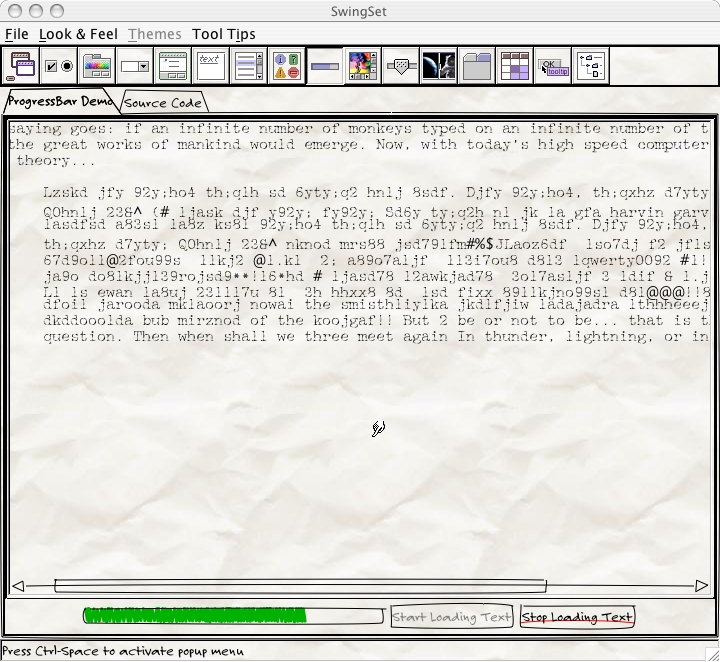
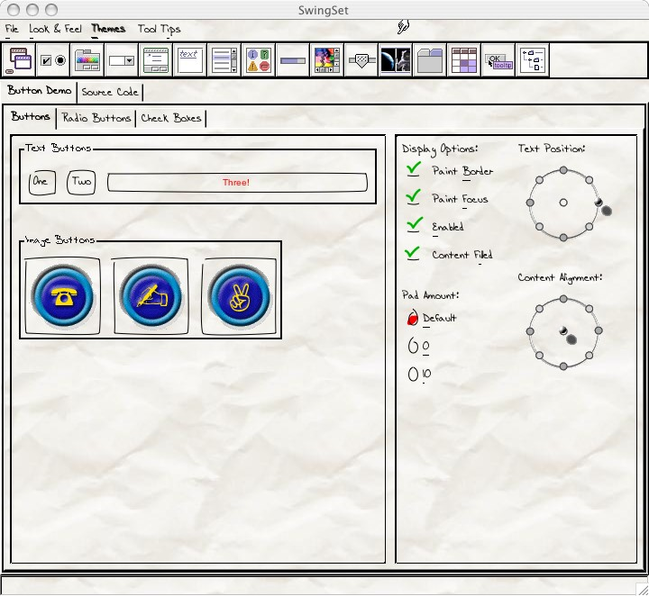
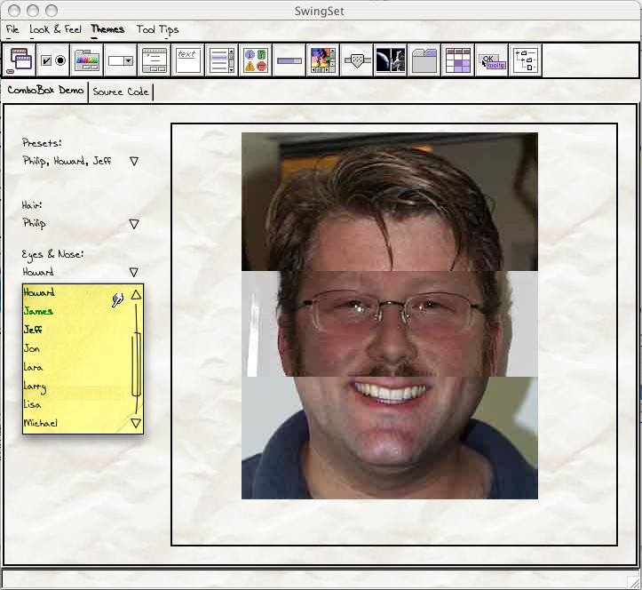

Recent
JavaOne 2004
I had about a dozen folks accost me at JavaOne 2004 to talk about the LAF.
It's nice to see that folks are out there looking. (I can't help but remind
folks using it that this is a volunteer project, and if you are using it,
spending a few cycles to help out would be most welcome.)
Latest Release:
alpha-007, 2 July, 2004
- Fixed bug that made disabled buttons peg the CPU (bug 964358).
- Thicker button marker lines.
- Can delete, etc. in text fields and areas (bug 968192).
- Make highlight color like yellow highlighter.
Overview
The Napkin Look & Feel is a pluggable Java look and feel that looks
like it was scrawled on a napkin. You can use it to make provisional
work actually look provisonal, or just for fun.
The idea is to try to develop a look and feel that can be used in
Java applications that looks informal and provisional, yet be fully
functional for development. Often when people see a GUI mock-up, or
a complete GUI without full functionality, they assume that the code
behind it is working. While this can be used to sleazy advantage,
it can also convince people who ought to know better (like your
managers) that you are already done when you have just barely begun,
or when only parts are complete. No matter how much you speak to their
rational side, the emotional response still says "Done!". Which after
a while leads to a later question: "That was done months ago! What are
they doing? Playing Quake?" A good article on this is Joel on Software's "The
Iceberg Secret, Revealed".
So the idea is to create a complete look and feel that can be used while
the thing is not done which will convey an emotional message to match the
rational one. As pieces of the work are done, the GUI for those pieces
can be switched to use the "formal" (final) look and feel, allowing
someone looking at demos over time to see the progress of the entire
system reflected in the expression of the GUI.
This is all done using the Java Swing pluggable Look & Feel framework.
Sightings
- Johnathan Knudsen's Daily
Prompt for JavaOne 2004. (The link doesn't look perma, so
it may not be good forever -- get it while it's hot!)
- Daniel
Steinberg's blog at java.net,
April 5, 2004
- A very nice quick writeup.
- Front page note on javadesktop.org,
April 1 2004
- Just a brief note pointing to the home page, but I got
some good mail from it.
Snapshots
To give you a feel for what this might look like, here are a couple
screen snapshots:

A Progress Bar (scribbled in at the bottom)

Various buttons

A Combo Box (Postit-style Popup Menu)
Development
I currently have a basic background model and most of the most basic
components working. Still need to work on uninstall and icons and generally
cleaning up, but I think I'm getting towards beta finally.
I welcome anyone to contribute -- thoughts, code, understanding, chocolate...
—Ken Arnold